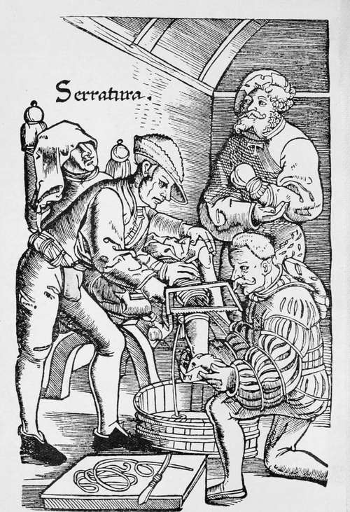

Chapter I. Introductory
Description
This section is from the book "Medieval Medicine", by James J. Walsh. Also available from Amazon: Medieval Medicine..
Chapter I. Introductory
To understand the story of Medieval Medicine, the reader must recall briefly the course of Roman history. Rome, founded some eight centuries before Christ, was at first the home of a group of adventurers who, in the absence of women enough to supply wives for their warriors, went out and captured the maidens of a neighbouring Sabine town. The feud which broke out as a result was brought to an end by the women now become the wives of the Romans, and an alliance was made. Gradually Rome conquered the neighbouring cities, but was ever so much more interested in war and conquest than in the higher life. The Etruscan cities, which came under her domination, now reveal in their ruins art objects of exquisite beauty and the remains of a people of high artistic culture. When Rome conquered Carthage, Carthage was probably the most magnificent city in the world, and Rome was a very commonplace collection of houses. Culture did not come to Rome until after her conquest of Greece, when "captive Greece led her captor captive".
Sir Henry Maine's expression that whatever lives and moves in the intellectual life is Greek in origin may not be unexceptionably true, but it represents a generalization of very wide application.
Rome was stimulated in art and architecture and literature by touch with the Greeks, and her own achievements, important though they were, were little better than copies of Greek originals. The Romans themselves acknowledged this very frankly. When in the course of time the barbarian nations from the North and West of Europe came down in large numbers into Italy, and finally gained control of the Roman Empire, they had but very little interest in the Greek sources, and decadence of the intellectual life was inevitable. This was particularly true as regards scientific subjects, and above all for medicine; for the Romans had always depended on Greek physicians, and Galen in the second century, like Alexander of Tralles in the seventh, represent terms in the series of physicians who reached distinction at Rome.
An Amputation Below The Knee. This is the first picture of an amputation known From Gerssdorjf*s woodcut, reproduced in Gurlfs "Geschichte der Chirurgie"
The key to the history of medicine in the Middle Ages, then, is always the presence of Greek influence. This persisted in the Near East, and consequently serious scientific medicine continued to flourish there, at first among the Christians and later among the Arabs. It was not for any special incentive of their own that the Arabs became the intellectual leaders of Europe during the tenth and eleventh centuries, but the fact that their geographical position in Asia Minor close to Greek sources provided them with the opportunity to know the old Greek authors, especially in philosophy and medicine, and therefore to be almost forced to become the channels through which Greek influences were carried into the West once more.
Before the coming of the Arabs, however—that is, before the rise of Mohammedanism—there was an important chapter of medieval medicine which is often not appreciated at its true worth. The contributors to it deserve to be well known, and fortunately for us in the modern time were properly appreciated during the early days of the art of printing, in the Renaissance time, and accordingly their books were printed, and came to be distributed in many copies, which have rendered them readily available in the modern time.
In Asia Minor, where Greek influence persisted as it did not in Italy, we have a series of distinguished contributors to medicine, or rather, medical literature — that is, men whose books represent a valuable compilation and digestion of the important medical writings from before their time, often enriched by their own experience. The first of these was Aetios Amidenus—that is, Aetios of Amida—born in the town of that name in Mesopotamia on the Upper Tigris (now Diarbekir), who flourished in the sixth century. Aetios, or in the Latin form Aetius, wrote a textbook that has often been republished in the modern time, and that shows very clearly how well the physicians of this period faced their medical and surgical problems, how thoroughly equipped they were by faithful study of the old Greek writers, and how successfully they coped with the difficulties of the cases presented to them. He is eminently conservative, a careful observer, who uses all the means at his command and who well deserves the interest that has been manifested in him at many periods during the almost millennium and a half elapsed since his death.
After Aetius came Alexander of Tralles, from another of these towns of Asia Minor that we would consider insignificant, sometimes termed Trallianus for this reason. He must be reputed one of the great independent thinkers in medicine whose writings have deservedly attracted attention not only in his own time, but long afterwards in the Renaissance period, and with whose works everyone who cares to know anything about the development of medical history must be familiar. One detail of his life has always seemed to me to correct a whole series of misapprehensions with regard to the earlier Middle Ages. Alexander was one of five brothers, all of whose names have come down to us through nearly 1,500 years because of what they accomplished at the great Capital of the East. The eldest of them was Anthemios, the architect of the great Church of Santa Sophia. A second brother was Methrodoros, a distinguished grammarian and teacher at Constantinople. A third brother was a prominent jurist in the Imperial Courts of the capital; while a fourth brother, Dioscoros, was, like Alexander, a physician of repute, but remained in his birthplace Tralles, and acquired a substantial practice there.
There is sometimes the feeling that at this time in the world's history, the end of the sixth and the beginning of the seventh century, men had but little initiative, and above all very little power of achievement in the intellectual order. Anyone who knows Santa Sophia in Constantinople, however, will recognize at once that the architect who conceived and superintended the construction of that great edifice was a genius of a high order, not lacking in initiative, but on the contrary possessed of a wonderful power of original accomplishment. No greater constructive work, considering all the circumstances, has perhaps ever been successfully planned and executed. It would scarcely be expected that the brother of the man who conceived and finished Santa Sophia would, if he set out to write a textbook of medicine, make an egregious failure of it. Surely his work would not be all unworthy of his brother's reputation, and the family genius should lift him up to important accomplishment. This is literally what we find true with regard to Alexander. After years of travel which led him into Italy, Gaul, Spain, and Africa, he settled down at Rome, and practised medicine successfully until a very old age, and probably lectured there, for some of his books are in the form of lectures.
Continue to:
- prev: Preface
- Table of Contents
- next: Introductory. Part 2